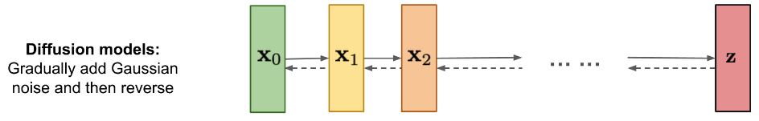
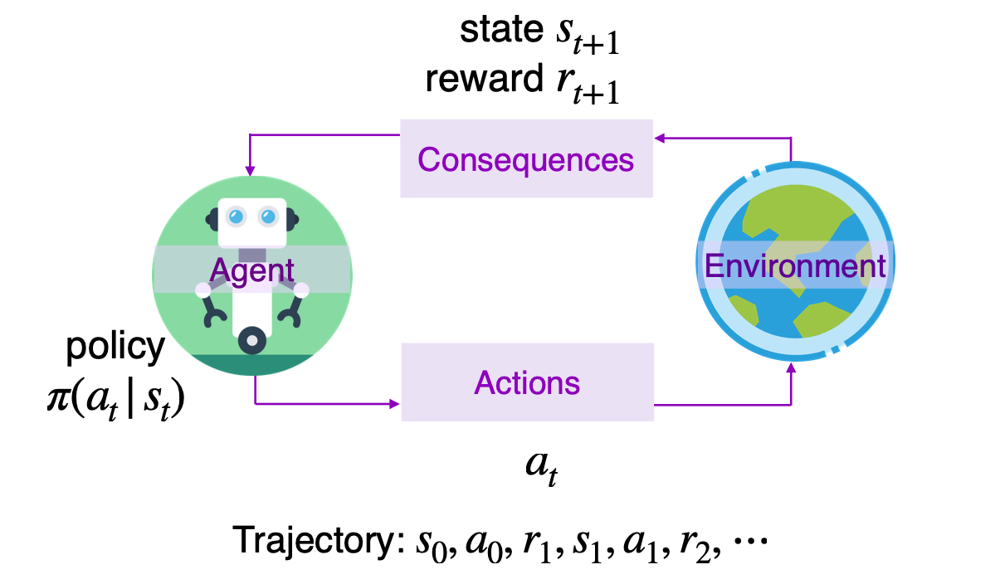
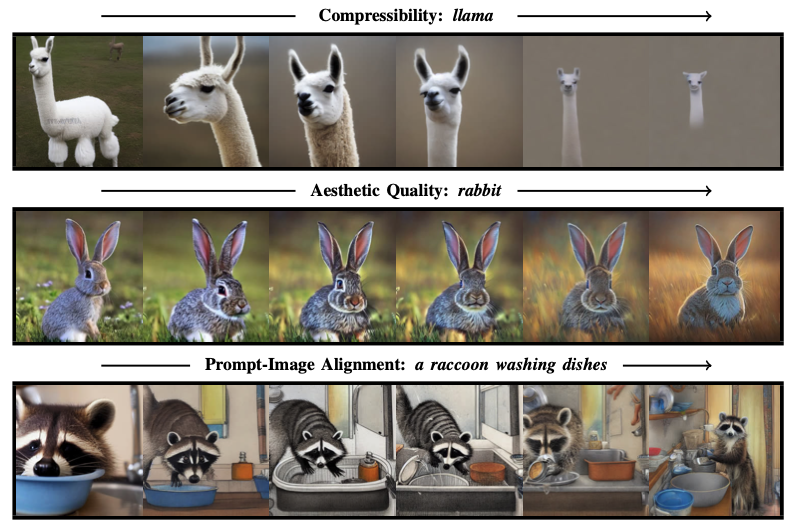
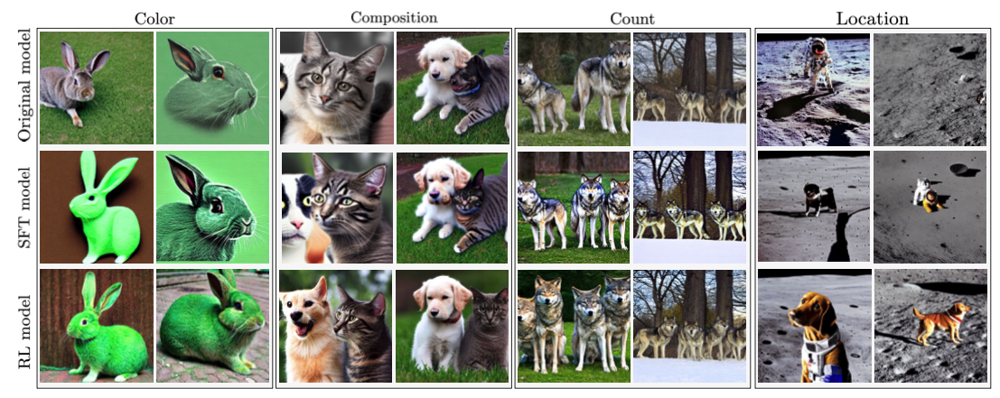
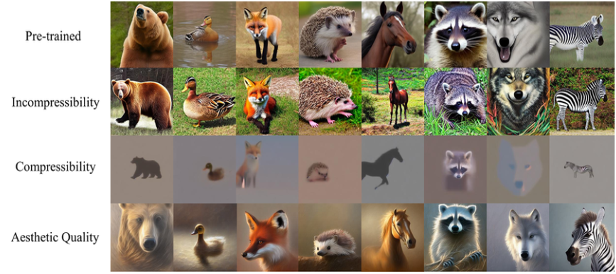
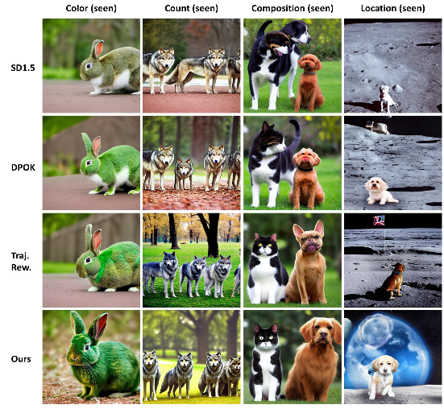
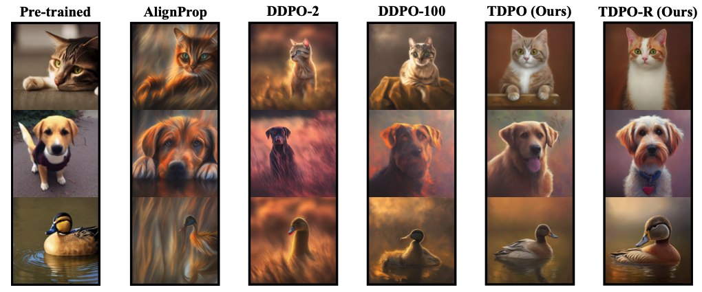

A Note on Fine-Tuning Diffusion Models with RL
The banner is generated by d3po.
Table of contents:
- Introduction
- Preliminaries: Diffusion Model
- Preliminaries: Reinforcement Learning
- Denoising as a multi-step MDP
- Denoising Diffusion Policy Optimization
- Diffusion Policy Optimization with KL regularization
- Direct Preference for Denoising Diffusion Policy Optimization
- A Dense Reward View on Aligning Text-to-Image Diffusion
- Temporal Diffusion Policy Optimization
- Results
Introduction
In this blog, we survey the method about Text2Image Alignment with Reinforcement Learning. This blog focus on image generation with diffusion models.
Preliminaries: Diffusion Model
Diffusion models define a Markov chain of diffusion steps to slowly add random noise to data and then learn to reverse the diffusion process to construct desired data samples from the noise.

Here we consider conditional diffusion probabilistic models, which represent a distribution $p(x_0|c)$ over a dataset of samples $x_0$ and corresponding contexts $c$. The distribution is modeled as the reverse of a Markovian forward process $q(x_t | x_{t−1})$, which iteratively adds noise to the data. Reversing the forward process can be accomplished by training a neural network
$$
\mathcal{L}{\text{DDPM}}(\theta) = \mathbb{E}{(x_0, c) \sim p(x_0, c), t \sim U{0, T}, x_t \sim q(x_t | x_0)} \left[ | \mu_{\theta}(x_t, c, t) - \tilde{\mu}(x_0, t) |^2 \right]
$$
Preliminaries: Reinforcement Learning
In RL, an AI agent learns to make decisions by interacting with its environment. It performs actions and receives feedback in the form of rewards or penalties. The goal is to maximize the total reward over time.

A Markov decision process (MDP) is a formalization of sequential decision-making problems. An MDP is defined by a tuple $(S, A, ρ_0, P, R)$, in which $S$ is the state space, $A$ is the action space, $ρ_0$ is the distribution of initial states, $P$ is the transition kernel, and $R$ is the reward function. At each timestep $t$, the agent observes a state $s_t \in S$, takes an action $a_t \in A$, receives a reward $R(s_t, a_t)$, and transitions to a new state $s_{t+1} \sim P (s_{t+1} | s_t, a_t)$. An agent acts according to a policy $\pi(a | s)$. As the agent acts in the MDP, it produces trajectories, which are sequences of states and actions $\tau = (s_0, a_0, s_1, a_1, . . . , s_T , a_T )$. The reinforcement learning (RL) objective is for the agent to maximize JRL(π), the expected cumulative reward over trajectories sampled from its policy:
$$
\mathcal{J}{\text{RL}} = \mathbb{E}{\tau \sim p(\tau|\pi)}[\sum_{t=0}^{T}R(s_t,a_t)]
$$
Denoising as a multi-step MDP
\begin{align*}
\text{State:} & \quad s_t \equiv (c, t, x_t) \
\text{Action:} & \quad a_t \equiv x_{t-1} \
\text{Policy:} & \quad \pi(a_t | s_t) \equiv p_{\theta}(x_{t-1} | x_t, c) \
\text{Initial State Distribution:} & \quad \rho_0(s_0) \equiv (p©, \delta_T, \mathcal{N}(0, I)) \
\text{Transition Kernel:} & \quad P(s_{t+1} | s_t, a_t) \equiv (\delta_c, \delta_{t-1}, \delta_{x_{t-1}}) \
\text{Reward:} & \quad R(s_t, a_t) \equiv
\begin{cases}
r(x_0, c) & \text{if } t = 0 \
0 & \text{otherwise}
\end{cases}
\end{align*}
Denoising Diffusion Policy Optimization
Following the MDP formulation above, we can apply policy gradient method to optimize the rewards.
\begin{equation}
\begin{aligned}
\text{DDPO}{\text{IS}}: \quad \nabla{\theta} J_{\text{DDRL}} = \mathbb{E} \left[ \sum_{t=0}^{T} \frac{p_{\theta}(x_{t-1} | x_t, c)}{p_{\theta_{\text{old}}}(x_{t-1} | x_t, c)} \nabla_{\theta} \log p_{\theta}(x_{t-1} | x_t, c) , r(x_0, c) \right]
\end{aligned}
\end{equation}
Diffusion Policy Optimization with KL regularization
The risk of fine-tuning purely based on the reward model learned from human or AI feedback is that the model may overfit to the reward and discount the “skill” of
the initial diffusion model to a greater degree than warranted. To avoid this phenomenon, we can add the KL between the fine-tuned and pre-trained models as a regularizer to the objective function.
\begin{equation}
\begin{aligned}
\nabla_{\theta} \mathcal{L} &= \mathbb{E}{p{\theta}(x_{0:T}|z)} \left[ -\alpha r(x_0, z) \sum_{t=1}^T \nabla_{\theta} \log p_{\theta}(x_{t-1} | x_t, z) + \beta \sum_{t=1}^T \nabla_{\theta} \text{KL} \left( p_{\theta}(x_{t-1} | x_t, z) | p_{\text{pre}}(x_{t-1} | x_t, z) \right) \right]
\end{aligned}
\end{equation}
Direct Preference for Denoising Diffusion Policy Optimization
The direct preference optimization (DPO) method, effective in fine-tuning large language models, eliminates the necessity for a reward model. While the DPO considered Bandit formulation, we can extends it to multi-step MDP. This is similar to this work: From r to Q∗: Your Language Model is Secretly a Q-Function.
- DPO:
\begin{equation}
L_{\text{DPO}}(\theta) = -\mathbb{E}{(x, y_w, y_l) \sim D} \left[ \log \rho \left( \beta \log \frac{\pi{\theta}(y_w | x)}{\pi_{\text{ref}}(y_w | x)} - \beta \log \frac{\pi_{\theta}(y_l | x)}{\pi_{\text{ref}}(y_l | x)} \right) \right]
\end{equation} - D3PO:
\begin{equation}
L_i(\theta) = -\mathbb{E}{(s_i, \sigma_w, \sigma_l)} \left[ \log \rho \left( \beta \log \frac{\pi{\theta}(a_w^i | s_w^i)}{\pi_{\text{ref}}(a_w^i | s_w^i)} - \beta \log \frac{\pi_{\theta}(a_l^i | s_l^i)}{\pi_{\text{ref}}(a_l^i | s_l^i)} \right) \right]
\end{equation}
A Dense Reward View on Aligning Text-to-Image Diffusion
In the denoising MDP above, we can observe that we only get reward in the final step. The sparse reward scenario often gives low sample efficiency. This paper assumed there is a latent reward function that scores each step of the reverse chain, making the learning problem more tractable.
- The regularized policy optimization problem is given by:
\begin{aligned}
\max_{\pi} \quad & \mathbb{E}{s \sim d{\pi_O}(s)} \left[ \mathbb{E}{a \sim \pi(a | s)} [r(s, a)] \right] - C \cdot \mathbb{E}{s \sim d_{\pi_O}(s)} \left[ D_{\text{KL}}(\pi(\cdot | s) | \pi_I(\cdot | s)) \right] \
\text{s.t.} \quad & \int_{A} \pi(a | s) , da = 1, \quad \forall s \in S
\end{aligned} - The optimal policy $\pi^$ that maximizes the above objective is derived as:
\begin{aligned}
\pi^(a | s) = \frac{\exp\left( \frac{r(s, a)}{C} \right) \pi_I(a | s)}{Z(s)}
\end{aligned}
where $Z(s)$ is the partition function given by:
\begin{aligned}
Z(s) = \int_{A} \exp\left( \frac{r(s, a)}{C} \right) \pi_I(a | s) , da
\end{aligned} - The reward function $r(s,a)$ can be expressed in terms of the optimal policy $\pi^$:
\begin{aligned}
r(s, a) = C \log \left( \frac{\pi^(a | s)}{\pi_I(a | s)} \right) + C \log Z(s)
\end{aligned} - The quality$e(\tau)$ of a trajectory $\tau$ is evaluated by the expected cumulative discounted rewards:
\begin{aligned}
e(\tau) = C \sum_{t=0}^{T} \gamma^t \log \left( \frac{\pi^*(a_t | s_t)}{\pi_I(a_t | s_t)} \right) + C \log Z(\tau)
\end{aligned} - Using the Bradley-Terry (BT) model, the probability of the ordering
ord under ${e(\tau_k)}2^k=1$ is:
\begin{aligned}
\text{Pr}(\text{ord} | \pi^, {e(\tau_k)}2^k=1) = \frac{\exp \left( C \sum{t=0}^{T} \gamma^t \log \left( \frac{\pi^(a^1_t | s^1_t)}{\pi_I(a^1_t | s^1_t)} \right) \right) Z(\tau_1)^C}{\sum{i=1}^{2} \exp \left( C \sum_{t=0}^{T} \gamma^t \log \left( \frac{\pi^*(a^i_t | s^i_t)}{\pi_I(a^i_t | s^i_t)} \right) \right) Z(\tau_i)^C}
\end{aligned} - To make this expression tractable, a lower bound is provided by arguing that $Z(\tau_1)\geq Z(\tau_2)$:
\begin{aligned}
\text{Pr}(\text{ord} | \pi^, {e(\tau_k)}2^k=1) \geq \frac{\exp ( C \sum{t=0}^{T} \gamma^t \log ( \frac{\pi^(a^1_t | s^1_t)}{\pi_I(a^1_t | s^1_t)} ) )}{\sum_{i=1}^{2} \exp ( C \sum_{t=0}^{T} \gamma^t \log \left( \frac{\pi^*(a^i_t | s^i_t)}{\pi_I(a^i_t | s^i_t)} \right)}
\end{aligned}
7.Finally, the negative-log-likelihood loss function for training the policy $\pi_\theta$ is derived:
\begin{aligned}
L_\gamma(\theta | \text{ord}, {e(\tau_k)}2^k=1) = - \log \sigma \left( C \mathbb{E}{t \sim \text{Cat}({\gamma^t})} \left[ \log \left( \frac{\pi_\theta(a^1_t | s^1_t)}{\pi_I(a^1_t | s^1_t)} \right) - \log \left( \frac{\pi_\theta(a^2_t | s^2_t)}{\pi_I(a^2_t | s^2_t)} \right) \right] \right)
\end{aligned}
Temporal Diffusion Policy Optimization
Reward overoptimization refers to the phenomenon where a model excessively optimizes learned or handcrafted reward functions, leading to a compromise in actual performance on the desired tasks. This occurs when the model overfits to the reward signals, which may not fully capture the true objectives or human intent behind the task.
- Temporal Diffusion Policy Optimization (TDPO):
- MDP Formulation with Temporal Rewards: By redefining the optimization process to consider rewards at each timestep of the diffusion process, rather than only at the end, the TDPO framework helps the model learn to value intermediate states that lead to high-quality outcomes. This approach inherently discourages the model from taking shortcuts that might optimize the final reward at the expense of the overall quality of the process.
- Temporal Critic: The introduction of a temporal critic function allows the model to approximate intermediate rewards, providing a more continuous feedback loop during training. This method helps align the model’s learning process with the temporal dynamics inherent in the task, promoting better generalization and reducing the likelihood of overfitting to end-state rewards.
\begin{aligned}
T(x_t, c) \approx T_{\phi}(x_t, c) \triangleq R(x_0, c) - R_{\phi}(x_t, c)
\end{aligned}
Use importance sampling to reweight the temporal rewards:
\begin{aligned}
\mathbb{E}{p©} \mathbb{E}{p_{\theta}(x_{0:t} | c)} \left[ -T_{\phi}(x_t, c) \nabla_{\theta} \frac{p_{\theta}(x_{t-1} | x_t, c)}{p_{\theta_{\text{old}}}(x_{t-1} | x_t, c)} \right]
\end{aligned}
Optimize the temporal critic by minimizing the following objective:
\begin{aligned}
\mathbb{E}{p©} \mathbb{E}{p_{\theta}(x_{0:t} | c)} \left[ \left( \hat{R}_{\phi}(x_t, c) - R(x_0, c) \right)^2 \right]
\end{aligned}
- Primacy Bias and TDPO-R:
- Primacy Bias: Refers to the tendency of deep RL agents to overfit early training experiences. This can contribute to reward overoptimization by locking the model into suboptimal behaviors based on initial training data.
- Neuron Activation States: The model differentiates between active and dormant neurons. Dormant neurons act as a regularization mechanism, while active neurons reflect primacy bias.
- Reset Strategy: Periodically resetting active neurons in the critic model mitigates primacy bias and prevents the model from overfitting to the reward signals. This approach encourages the model to learn new regularization patterns without forgetting crucial past regularization.
- Equation for Neuron Mask:
\begin{aligned}
\text{Mask}^m = \left[ A^m_n > 0 \right]^{N_m}_{n=1}
\end{aligned}
By incorporating these strategies, the paper demonstrates that TDPO-R effectively mitigates reward overoptimization, enhances sample efficiency, and improves cross-reward generalization, leading to more reliable and robust diffusion models that better align with human preferences and intended outcomes.
Results
DDPO:

DPOK:

D3PO:

DPO with explicit dense reward:

TDPO:


KJL
聽君一席話 如聽一席話